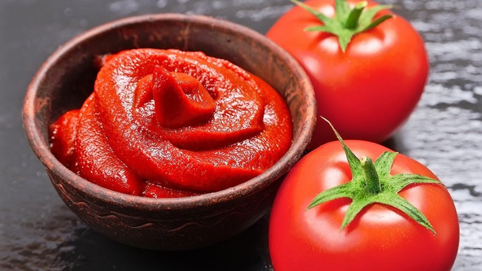
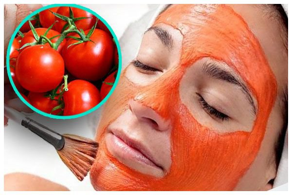
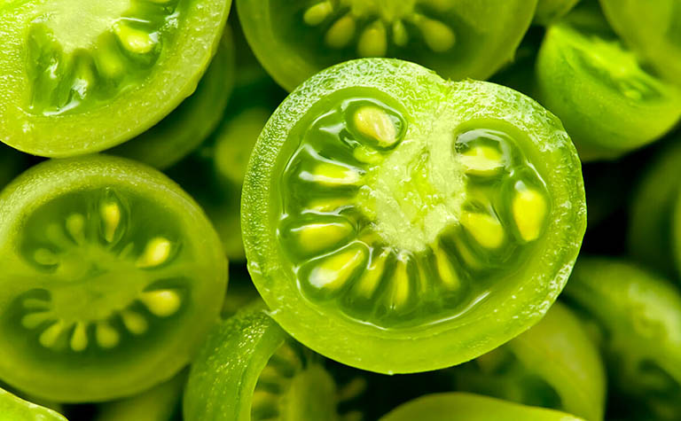

Lợi ích ăn cà chua sống có thực sự đẹp da?
2/4/2023
Thật sự ăn cà chua sống đẹp da không? Cà chua sống không những đem tới tác dụng chữa bệnh mà còn có tác dụng làm đẹp da hiệu quả. Với hàm lượng dinh dưỡng cao, ăn cà chua sống luôn được nhiều người thực hiện hằng ngày. Vậy ăn cà chua sống như thế nào? Có tốt cho sức khỏe? Có đẹp da không? Cùng Home Flavor đi tìm câu trả lời nhé.

1. Giới thiệu về cà chua
Cà chua là một loại cây thân thảo thuộc họ cây Bạch anh có danh pháp khoa học là Solanum lycopersicum chiều cao từ khoảng 1 đến 3 mét, đặc điểm của cà chua là dễ trồng và thời gian kết quả nhanh. Cà chua là loại thực phẩm thông dụng nên có người gọi cà chua là quả cũng có người gọi là rau vì cà chua tường được ăn kèm với các món salad rau…
2. Giá trị dinh dưỡng của cà chua
Chất xơ: Cung cấp khoảng 1.5 gam trong mỗi quả cà chua cỡ trung bình. 87% các chất xơ trong cà chua là chất xơ không hòa tan, ở dạng hemicellulose, cellulose và lignin.
Vitamin và khoáng chất: cà chua là nguồn cung cấp nhiều vitamin và khoáng chất: Vitamin C, thành phần dinh dưỡng thiết yếu đồng thời có vai trò như chất chống oxy hóa. Sử dụng một quả cà chua cỡ trung bình có thể cung cấp cho cơ thể khoảng 28% lượng tiêu thụ hàng ngày tham khảo (RDI). Kali, khoáng chất thiết yếu, kali có lợi cho việc kiểm soát huyết áp và ngăn ngừa bệnh tim. Vitamin K1 hay phylloquinone, có vai trò rất quan trọng đối với quá trình đông máu và sức khỏe của xương.
3. Lợi ích của việc ăn cà chua
Cà chua cũng đa dạng chủng loại và nhiều màu sắc khác nhau tùy vào mỗi giống. Nhưng đa phần chúng ta biết đến cà chua đỏ, cà chua có mùi vị ngọt ngọt pha một chút chua chua đem lại nhiều cảm giác mới lạ cho người sử dụng. Ban đầu khi cà chua còn sống có màu xanh khi chín sẽ ngả sang màu đỏ tươi rất đẹp mắt.
Với vitamin A và C có trong cà chua sẽ giúp phòng ngừa bệnh quáng gà và giúp mắt sáng hơn. Ngoài ra, còn giảm thoái hóa điểm vàng – một loại bệnh khá nghiêm trọng có thể dẫn tới mù lòa.
Bổ sung cà chua mỗi ngày sẽ giúp phòng ngừa bệnh ung thư tuyến tiền liệt và giảm nguy cơ mắc các bệnh khác như: dạ dày, thực quản, vòm họng,…
Ung thư, sự phát triển không kiểm soát của các tế bào bất thường, lan rộng ra ngoài ranh giới bình thường của chúng và thường xâm lấn các bộ phận khác của cơ thể.
Các nghiên cứu quan sát đã ghi nhận mối liên hệ giữa cà chua hay các sản phẩm từ cà chua và tỷ lệ mắc ung thư tuyến tiền liệt, phổi và dạ dày ít hơn.
Mặc dù hàm lượng lycopen cao được cho là có tác dụng với các bệnh ung thư, nhưng cần có nghiên cứu chất lượng cao ở con người để xác nhận nguyên nhân của những lợi ích này.
Lưu ý: Để phát huy tối đa tác dụng này, bạn nên nấu cà chua cùng quả ô liu. Như vậy, các chất có trong hai loại quả sẽ phối hợp ăn ý giúp người dùng nạp được những dưỡng chất tốt nhất.
Một trong những phương pháp làm trắng da hiệu quả ngay tại nhà nhưng bạn không cần phải tốn kém quá nhiều tiền của. Bởi vì bạn chỉ cần dùng đến các vật dụng đơn giản đó là dùng cà chua để làm trắng da. Cân bằng sắc tố da trong cà chua có chứa nhiều vitamin B như B1, B3, B5, B6, B9. Nhờ đó, tác dụng của cà chua với da mặt bạn là giúp giảm các đốm đồi mồi, các vết nám da, phục hồi những làn da bị hư tổn và không đều màu. Vitamin C trong cà chua giúp da săn chắc hơn có thể kích thích sản xuất collagen nên giúp cải thiện độ đàn hồi và sự săn chắc cho làn da của bạn.
Đây là công dụng tuyệt vời của cà chua mà chị em không nên bỏ qua. Các vitamin và sắt của cà chua giúp tóc bạn không còn tình trạng hư tổn, xơ rối nữa mà thay vào đó là một mái tóc bồng bềnh, chắc khỏe. Bên cạnh đó khi sử dụng cà chua, mái tóc của bạn sẽ cân bằng được lượng pH do tính axit. Một mẹo nhỏ cho các bạn đang gặp rắc rối với gàu là hãy ép một lượng cà chua tươi vừa phải, thoa lên da đầu sau khi gội. Rửa sạch lại với nước ấm. Tuy nhiên, không nên quá lạm dụng cách này vì sẽ khiến tóc bị khô do lượng axit có trong cà chua.
Ăn cà chua sống giảm cân là vì cà chua không chứa cholesterol và chất béo nhiều nên không có tác dụng làm tích tụ mỡ thừa. Mặc khác cà chua còn là thực phẩm chứa nhiều các vitamin A, C và hàm lượng chất xơ dồi dào nên khi ăn cà chua sống hay uống nước ép cà chua sẽ giúp cung cấp đầy đủ dinh dưỡng cho cơ thể. Hàm lượng chất xơ dồi dào sẽ giúp no lâu hơn, hạn chế các cơn thèm ăn từ đó sẽ đem tới tác dụng giảm cân hiệu quả nhé.
Cà chua chứa carbohydrate vô cùng ít, điều này giúp giảm lượng đường tồn tại trong máu. Ngoài ra, loại quả này còn chứa crom và chất xơ giúp kiểm soát tốt lượng đường trong máu. Trong một số bài nghiên cứu, cho thấy vai trò các chất chống oxy hóa trong cà chua không chỉ tốt cho da dẻ, mà còn bảo vệ thành mạch và thận. Đây là những cơ quan dễ bị tổn thương bởi bệnh tiểu đường gây ra.
Có lẽ sẽ rất nhiều bạn ngạc nhiên với công dụng này của cà chua. Cà chua là một quả mọng nước, vì thế khi nạp loại quả này trong lúc say sẽ giúp lượng nước được bổ sung hoà tan với lượng cồn đã đưa vào trước đó. Đồng thời, các vitamin và các chất chống oxy hóa sẽ giúp giảm thiểu tác hại mà rượu bia gây ra cho dạ dày.
4. Lưu ý khi ăn cà chua sống
Cà chua xanh chứa nhiều alkaloid, chất này rất dễ gây ngộ độc thực phẩm. Một số triệu chứng ngộ độc thường thấy được gây ra bởi cà chua xanh gồm: buồn nôn, nôn mửa, tiết nước bọt, sức khỏe suy giảm, thường xuyên cảm thấy mệt mỏi.
Tuy cà chua là một loại quả tốt và có nhiều công dụng bổ ích cho cơ thể, nhưng bạn không nên ăn cà chua trước bữa ăn. Vì nó có thể gây hại cho dạ dày và nhiều triệu chứng không tốt khác. Cà chua chứa rất nhiều Pectin, nhựa Phenolic và các thành phần khác tương tự như quả hồng vàng. Vì thế, khi sử dụng cà chua lúc đói, những chất này sẽ thuận tiện phản ứng với axit, tạo thành các cục không hòa tan được và tác động tới quá trình tiêu hóa thức ăn. Nếu bạn duy trì cách ăn này nhiều lần hoặc tệ hơn là mỗi ngày sẽ gây ra chứng viêm loét dạ dày.
hư đã đề cập ở mục trên, bất cứ thứ gì khi nạp vào cơ thể cũng cần có khẩu phần ăn hợp lý và điều độ. Nên việc ăn nhiều cà chua sống vượt mức cho phép là điều tối kỵ. Khẩu phần ăn hợp lý khi ăn cà chua sống là một quả cà chua kích thước vừa hoặc 7 trái cà chua bi. Cà chua không chỉ là một loại quả quen thuộc, tiện dụng dễ phối hợp với nhiều món ăn và thức uống mà còn chứa nhiều chất dinh dưỡng thiết yếu cho cơ thể. Hy vọng qua bài viết này, bạn có thể biết cách ăn cà chua sống khoa học và hợp lý.
Khi ăn cà chua, bạn không nên ăn hạt cà chua bởi thật chất hạt cà chua cứng tương tự hạt ổi làm đường ruột không thể tiêu hoá. Hạt cà chua sẽ bị rơi xuống đường ruột, gây viêm ruột thừa trong quá trình tiêu hoá và vận chuyển các chất nuôi cơ thể.